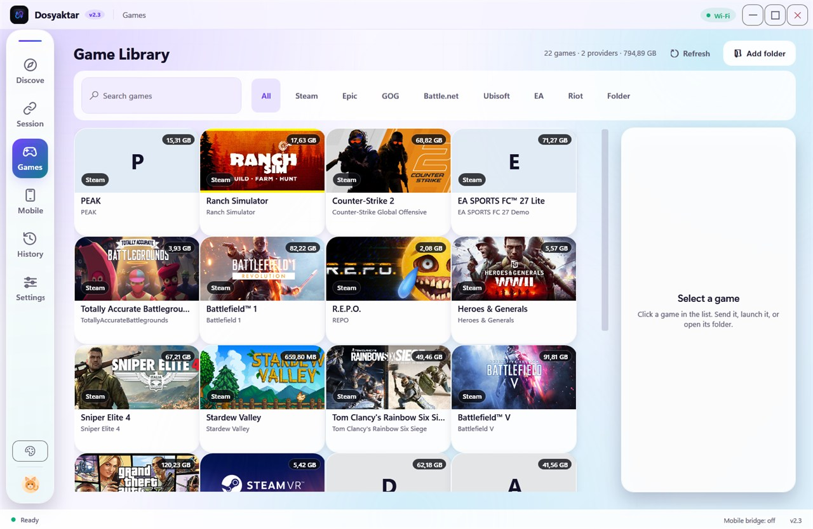

Flash transfer
Files are split into 8 MB chunks and carried over 32 parallel TCP channels.
Windows 10 / 11 · v2.3.0
No internet, no account, no ads. Run one EXE and move files, folders and installed games straight between two computers on the same network.

Features
Files, folders, games and your phone — one flow.
Files are split into 8 MB chunks and carried over 32 parallel TCP channels.
No account, no email. A 6-digit code on screen links the two devices.
Steam, Epic, GOG, Battle.net, Ubisoft, EA and Riot libraries are scanned; the game lands in the target library.
Send and receive from a phone browser. Nothing to install.
Turkish, English, German, French, Spanish, Japanese. The interface switches instantly.
Prism, Midnight, Nordic, Aurora, Sunset, Cyber, Forest, Graphite — all at WCAG AA contrast.
Screenshots
The interface itself — not a mockup.
How it works
Open Dosyaktar on both computers. There is nothing to install.
Click the other device and confirm the 6-digit PIN.
Drop files, folders or a game; the transfer starts at once.
Both computers must run the same version. The Windows Firewall rule is added on first run.